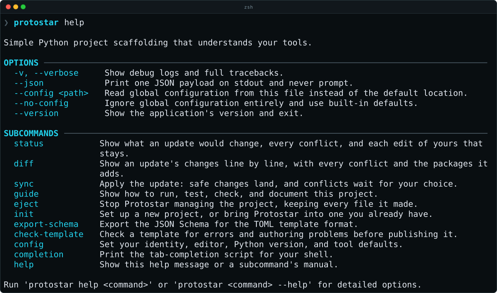

Getting Started¶
Installation¶
Protostar needs uv and git. Installation covers both on each platform, for a machine with no Python setup. New to Python tooling? Your First Project walks through a project from start to finish.
protostar init sets up a project in the current directory, either in a terminal screen where you choose everything, or headlessly from flags.
The Recipe Editor¶
Run protostar init with no arguments in an empty folder, or in a project you already have, and it opens the recipe editor: the template, its tier and options, every tool as a switch, and the project's details, with a live preview of the files it will write. Ctrl+S continues to the change review, which shows every file and command before anything runs. The keyboard does everything, and ? lists the keys.
Headless Setup¶
Pass a template, and any tool flags, to skip the screens:
It writes the files, runs git init and uv init, and installs the dependencies with uv, which takes as long as the downloads do. Add --dry-run first to see the plan without writing anything, and --no-<tool> to leave a tool out.
What the Project Contains¶
The cli template starts in the production tier, so the project has the full quality gate:
- A Typer and Rich command-line package in
src/, installable with Hatchling, with its console script in[project.scripts]and a test intests/. - Tool settings in
pyproject.toml: Ruff, strict Mypy, pytest with coverage, and rumdl for Markdown. - Commit hooks in
.pre-commit-config.yaml, run by prek, with Commitizen checking each commit message and keepingCHANGELOG.md. - CI and releases: GitHub Actions workflows that run the checks and publish to PyPI on a version tag, Renovate settings, and Codecov.
- Documentation: a Zensical site in
docs/, ready for Read the Docs. - The files GitHub shows contributors:
CONTRIBUTING.md, a code of conduct, a security policy, and issue and pull request templates. - A
justfilewithjust lint,just test, andjust ci, and an.envrcthat activates the virtual environment through direnv.
Every file protostar init --template cli writes
.
├── .envrc
├── .github
│ ├── ISSUE_TEMPLATE
│ │ ├── bug_report.yml
│ │ └── feature_request.yml
│ ├── codecov.yml
│ ├── pull_request_template.md
│ ├── renovate.json
│ └── workflows
│ ├── ci.yml
│ └── release.yml
├── .gitignore
├── .pre-commit-config.yaml
├── .python-version
├── .readthedocs.yaml
├── CHANGELOG.md
├── CODE_OF_CONDUCT.md
├── CONTRIBUTING.md
├── README.md
├── SECURITY.md
├── docs
│ └── index.md
├── justfile
├── protostar.lock
├── pyproject.toml
├── src
│ └── demo_project
│ ├── __init__.py
│ └── cli.py
├── tests
│ └── test_cli.py
├── uv.lock
└── zensical.toml
Two of those files make this a Protostar project rather than a copy of a template. [tool.protostar] in pyproject.toml is the recipe: what you asked for. protostar.lock records what Protostar wrote. Commit both, and when the template or Protostar improves, protostar status shows the update and protostar sync applies it without overwriting your edits. How Protostar Tracks Your Files explains how.
Getting Help¶
protostar help lists every command, and protostar help <command> shows one command's options. The CLI Reference has the same, generated from the same source.

Shell Completion and an Alias¶
Tab Completion¶
protostar completion prints a tab-completion script for Zsh, Bash, Fish, or PowerShell, with nothing else to install. Save it to a file once, as below. Generating it each time your shell starts would slow down every new terminal.
Save the script and load it from ~/.zshrc:
Save the script and load it from ~/.bashrc:
protostar completion bash > ~/.protostar-completion.bash
echo 'source ~/.protostar-completion.bash' >> ~/.bashrc
source ~/.bashrc
macOS's Terminal starts login shells, which read ~/.bash_profile instead; append the source line there if your ~/.bash_profile doesn't already read ~/.bashrc.
Save the script to Fish's completions directory. Fish loads it from there, so no configuration file changes:
A Shorter Name¶
Protostar installs only the protostar command, since other tools also use proto. To type less, add an alias to ~/.zshrc or ~/.bashrc:
Next Steps¶
- Configuration: Set your name, editor, Python version, and the tools new projects start with, once.
- Tooling & Flags Matrix: Every tool, its flag, and the built-in templates.
- CLI Reference: Every command, option, and exit code.
- Troubleshooting & FAQ: Fixes for missing programs, existing files, and editor schema setup.
- Project Lifecycle: Keep the project current with
status,diff, andsync.